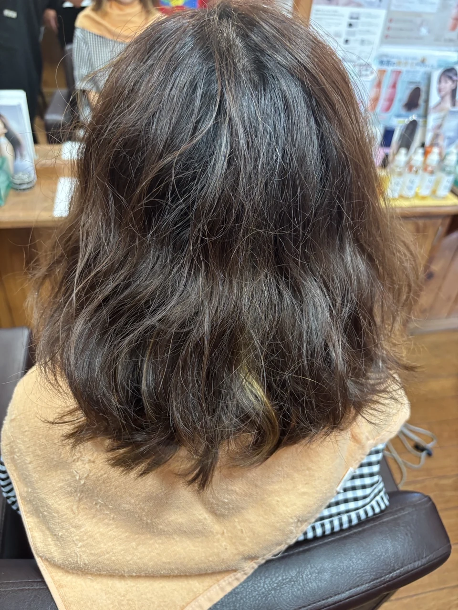
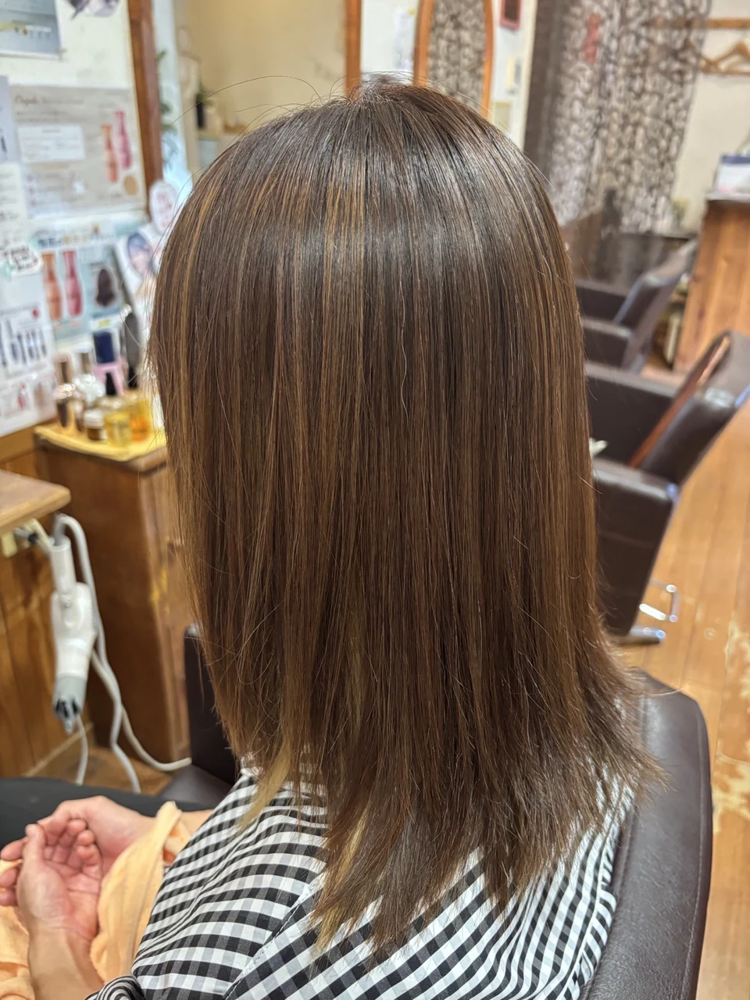
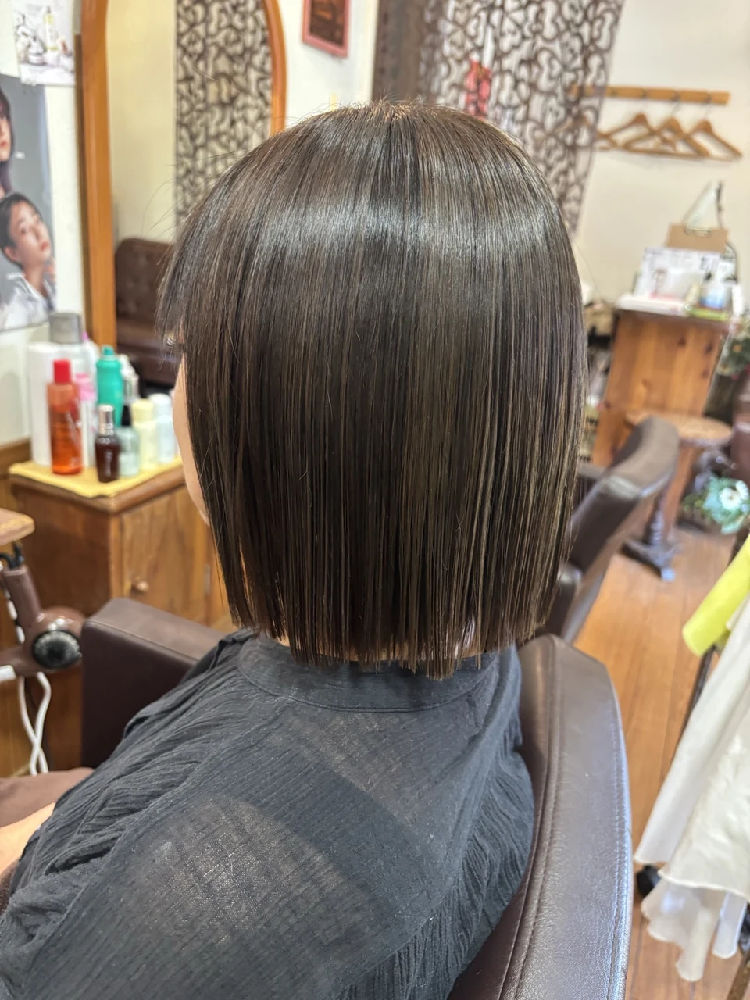
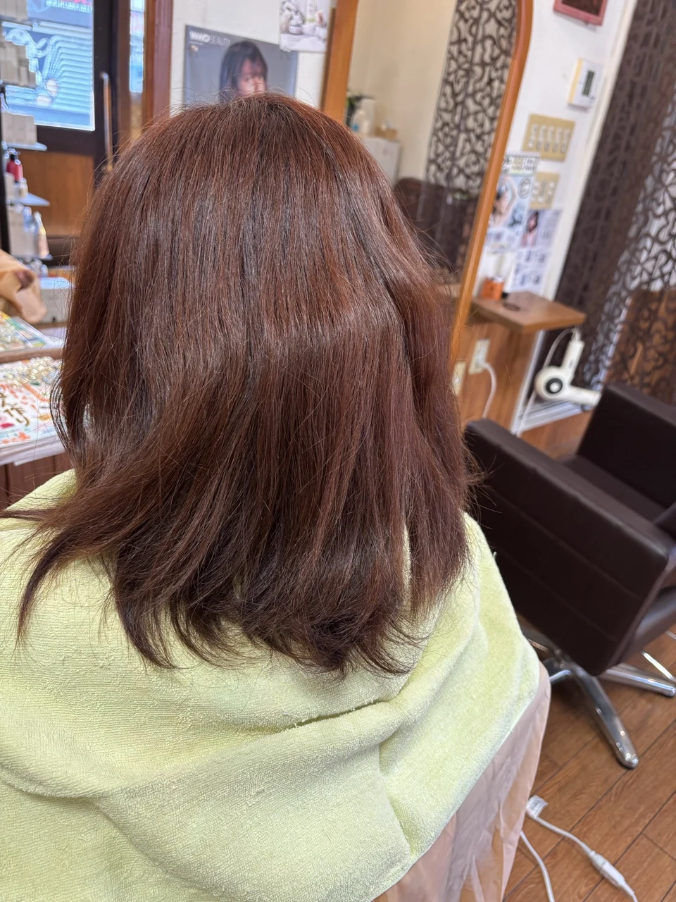
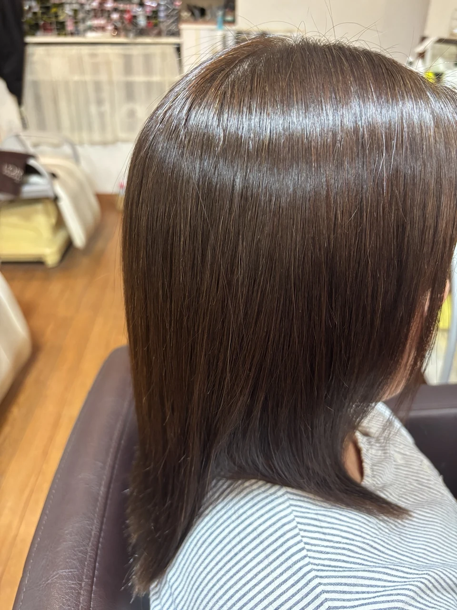
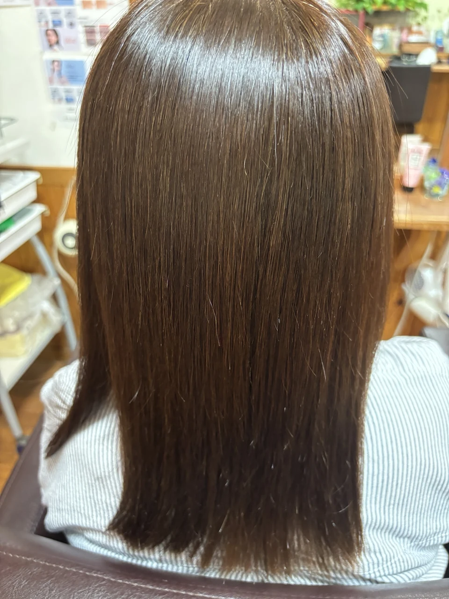
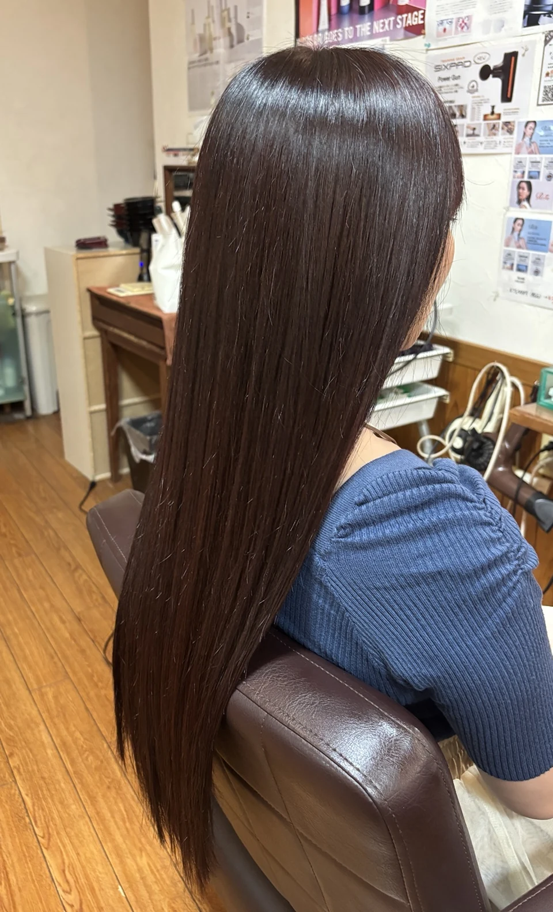

CASE A / 実施術写真
うねり・広がりを相談したい方へ
酸性縮毛矯正＋髪質改善トリートメント
エイジング毛対策として、酸性縮毛矯正に髪質改善トリートメントを併用した施術です。現在の髪と履歴を確認して施術を考えます。
長さやカットの違い、撮影条件の違いも含まれるため、写真の差をすべて施術効果として説明するものではありません。
施術の考え方を読むREAL SALON WORK
うねりや広がりが気になる髪に、どのように向き合うか。
酸性縮毛矯正＋髪質改善トリートメントの実際の施術写真をご紹介します。
BEFORE & AFTER
実際の施術写真です。髪を生成し直す加工やツヤの追加は行っていません。撮影角度・光・長さは写真ごとに異なります。仕上がりには個人差があり、同じ結果を保証するものではありません。
以下は、エイジング毛対策として髪質改善トリートメントを併用した酸性縮毛矯正の施術記録です。


CASE A / 実施術写真
酸性縮毛矯正＋髪質改善トリートメント
エイジング毛対策として、酸性縮毛矯正に髪質改善トリートメントを併用した施術です。現在の髪と履歴を確認して施術を考えます。
長さやカットの違い、撮影条件の違いも含まれるため、写真の差をすべて施術効果として説明するものではありません。
施術の考え方を読む

CASE B / 実施術写真
酸性縮毛矯正＋髪質改善トリートメント
エイジング毛対策として、酸性縮毛矯正に髪質改善トリートメントを併用した施術です。現在の髪と履歴を確認して施術を考えます。
長さやカットの違い、撮影条件の違いも含まれるため、写真の差をすべて施術効果として説明するものではありません。
施術の考え方を読む

CASE C / 実施術写真
酸性縮毛矯正＋髪質改善トリートメント
エイジング毛対策として、酸性縮毛矯正に髪質改善トリートメントを併用した施術です。現在の髪と履歴を確認して施術を考えます。
長さやカットの違い、撮影条件の違いも含まれるため、写真の差をすべて施術効果として説明するものではありません。
施術の考え方を読むAFTER GALLERY
以下は施術後のみの写真です。それぞれ独立した写真として掲載しています。

酸性縮毛矯正＋髪質改善トリートメント

酸性縮毛矯正＋髪質改善トリートメント

酸性縮毛矯正＋髪質改善トリートメント
仕上がり写真には、施術前の比較はありません。髪の状態や履歴に合わせた施術については、LINEでご相談ください。
RESERVATION & CONSULTATION
メニューが決まっている方は空席確認へ。
迷う方は、髪のお悩みとこれまでの履歴をLINEでお聞かせください。
ネット予約は、同じ店舗の「Best Hair Latief」石田学指名ページへ移動します。メニューが未定の方・ブリーチ履歴のある方は、まずLINEへ。
LINE・Googleフォームは希望日時を伺い、調整後に当店から本予約確定の連絡をお返しします。ホットペッパーでは予約完了画面と内容をご確認ください。
予約希望フォームを開く ↗